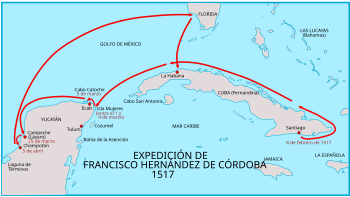
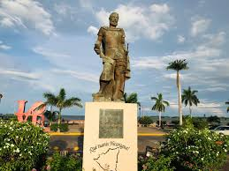
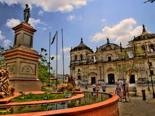
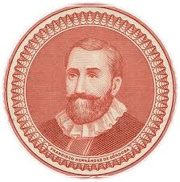

Francisco Hernández de Córdoba
fue un conquistador español, capitán y jefe de expedición a las órdenes de Pedro Arias Dávila. La moneda de Nicaragua, el córdoba, es llamada así en su memoria a fue un navegante y conquistador español que llegó a Nicaragua en 1522. Durante su estancia en el país, realizó varias expediciones por la costa del Pacífico, explorando y descubriendo nuevos territorios. Sin embargo, su mayor contribución fue la fundación de ciudades, estableciendo así las bases para la colonización y el asentamiento español en la región. Entre las ciudades que fundó se encuentran Granada, León y Segovia, que se convirtieron en importantes centros económicos y políticos en la época colonial.
La llegada de francisco Hernández de Córdoba
En 1522, Francisco Hernández de Córdoba lideró una expedición hacia el territorio que hoy conocemos como Nicaragua. Durante este viaje, exploró y descubrió numerosas tierras y poblados indígenas.
En 1524, fundó la ciudad de Granada, la cual se convirtió en la primera ciudad española establecida en Nicaragua. Granada se convirtió en un importante centro económico y cultural durante la época colonial.
Además de la fundación de Granada, Hernández de Córdoba también participó en la exploración de otras regiones de Nicaragua, omo la costa del Pacífico y el río San Juan. Sus expediciones se sentaron las bases para la posterior colonización y conquista de la región.
La fundación de ciudades
En la historia de Nicaragua, uno de los personajes más destacados es Francisco Hernández de Córdoba. Este valiente explorador y conquistador español llegó a tierras nicaragüenses en el siglo XVI y dejó un legado duradero a través de la fundación de ciudades.
Hernández de Córdoba zarpó desde la isla de Cuba en 1524 con el objetivo de explorar y conquistar nuevas tierras en el continente americano. Después de atravesar el Mar Caribe, llegó a las costas de lo que hoy conocemos como Nicaragua.
Impulsado por su espíritu aventurero y su afán de descubrimiento, Hernández de Córdoba decidió adentrarse en el territorio y explorar lo desconocido. Durante su expedición, tuvo numerosos encuentros con las diferentes comunidades indígenas que habitaban la región.
La fundación de León
Uno de los hitos más importantes en la historia de Hernández de Córdoba fue la fundación de la ciudad de León. En 1524, decidió establecer un asentamiento en el valle de Momotombo, cerca del actual Volcán Momotombo. Esta ciudad se convirtió en uno de los primeros centros urbanos de Nicaragua y fue un importante punto estratégico durante la época colonial.
Con el paso del tiempo, León se convirtió en una ciudad próspera y culturalmente rica. Fue la primera capital de Nicaragua y albergó importantes instituciones educativas y religiosas. Además, fue testigo de importantes eventos históricos y políticos que marcaron el devenir del país.
Además de León, Hernández de Córdoba fundó otras ciudades en Nicaragua. Entre ellas se encuentran Granada, Masaya y Rivas. Estas ciudades también jugaron un papel fundamental en la historia del país y conservan hasta hoy su legado colonial.
Granada, conocida como la "Gran Sultana", es una ciudad llena de encanto y belleza arquitectónica. Masaya es famosa por su artesanía y su tradición cultural, mientras que Rivas destaca por su ubicación estratégica en la costa del Pacífico y su importancia económica
El legado duradero de Francisco Hernández De Córdoba
El legado de Francisco Hernández de Córdoba perdura en la historia y en la cultura de Nicaragua. Sus fundaciones de ciudades han dejado una huella imborrable en el paisaje urbano y en la identidad del país. Además, su exploración y conquista abrieron nuevas rutas y posibilidades para el desarrollo de la región.
Hoy en día, las ciudades fundadas por Hernández de Córdoba son destinos turísticos populares que atraen a visitantes de todo el mundo. Su legado perdura en cada calle empedrada, en cada iglesia colonial y en cada historia que se cuenta sobre la historia de Nicaragua.
Desarrollo urbano y crecimiento económico
La fundación de estas ciudades no solo proporcionó un lugar para que los colonos españoles se establecieran, sino que también impulsó el crecimiento económico al fomentar el comercio y la agricultura en la región. Las ciudades se convirtieron en importantes centros de producción y comercio,especialmente en la exportación de productos agrícolas como el cacao, el tabaco y el añil.
Además de su papel en el desarrollo urbano y el crecimiento económico, Hernández de Córdoba también dejó un legado duradero en la historia de Nicaragua. Su liderazgo y valentía durante la conquista de la región establecieron las bases para la colonización española en Nicaragua y tuvieron un impacto significativo en la cultura y la sociedad nicaragüense.
Francisco Hernández de Córdoba fue un personaje clave en la historia de Nicaragua como fundador de ciudades. Su contribución al desarrollo urbano y al crecimiento económico fue fundamental, y su legado perdura hasta el día de hoy